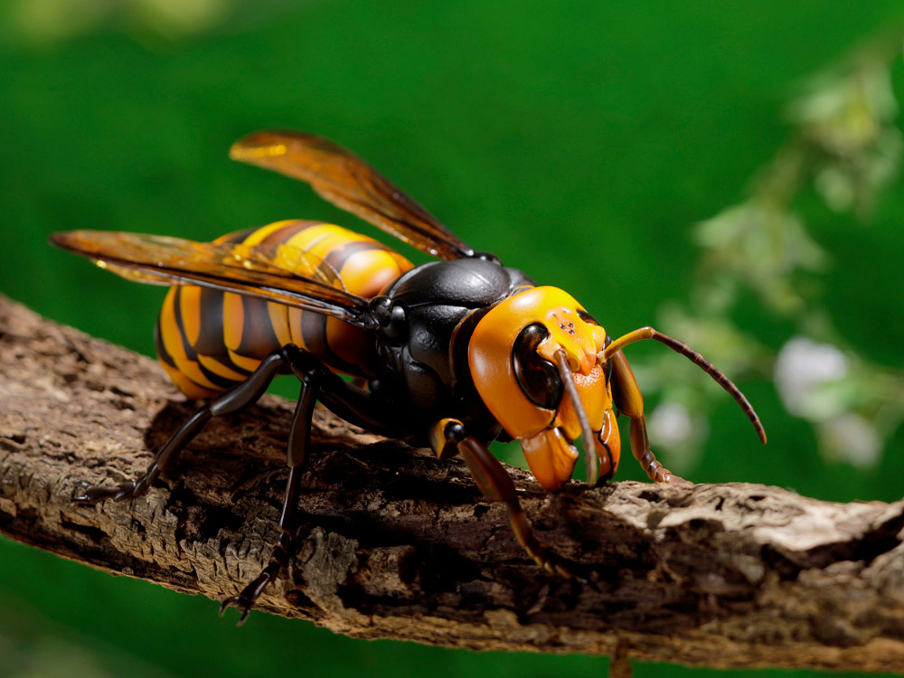

Toque na imagem para ouvir o somSintomas da Vespa Vespa-mandarina (Vespa mandarinia)
Seus sintomas podem levar a óbito
Humano
- Dor
- Vermelhidão na pele
- Inchaço
- Coceira
Cão
- Urticária
- Náusea
- Edema na face
- Vômito
- Dificuldade para respirar
Gato
- Parece stressado
- Mia de dor
- Edema
- Vermelhidão
- Coceira na área da picada
- Salivação ou vomite